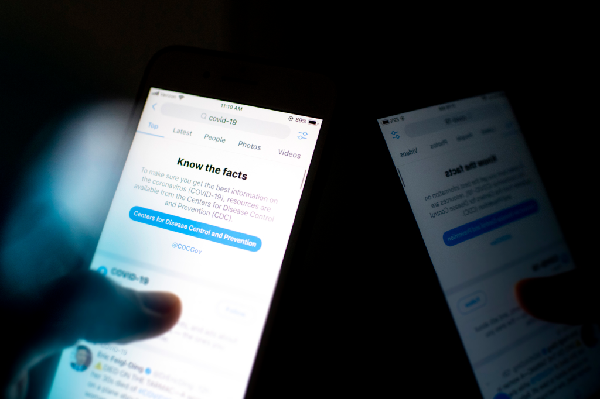

14 JAN 2024 | BY EMILY LOH
Photo by Ruby Wallau on Northeastern Global News showing a notice about COVID-19 that encourages source-checking
While the world was buzzing with social and political change, the marriage of China’s first billionaire lesbian couple, Meng Mei Qi and Wu Xuan Yi, shook the internet through a tweet three months into Trump’s presidency.
The news sparked debates about Trump’s stance on LGBTQ+ rights. The story gained attention all over Twitter, and even actress Debby Ryan retweeted the photo. However, with over 20,000 retweets, the news was later revealed to be an innocent joke made by Abby Fry, a fan of WJSN, the K-POP group Meng and Wu were members of. No marriage, no lesbian couple, no billionaires—just two artists posing at a film festival.
Misinformation can slip right into our hands through likes, retweets, comments, hashtags, or views, even when our search history and posts seem unrelated. Sometimes, even the most cautious young adults on the internet can fall into the rabbit hole.
What Is Implicit Bias?
The phrase “implicit bias” was coined in 1995 by psychologists Mahzarin Banaji and Tony Greenwald. They stated that “social behavior often operates in an implicit or unconscious fashion,” slipping past us undetected. Most individuals refuse to believe they harbor stereotypes or don’t know such bias exists in their mindsets. We project our biases by voicing our opinions verbally or on social media. X, formerly Twitter, has always been the perfect platform for sharing thoughts. Consuming social media like X can build implicit biases in our head without people explicitly engaging with one side or another.
While a social media platform full of diverse opinions and facts can be a convenient environment for sharing perspectives, social media confines us to a bubble that amplifies ideas without controlling what is factually or morally correct or wrong. The unfiltered list of short but impactful posts shapes our opinions one tweet at a time. This constant exposure to personalized content can be more than just shaping our political or social views; it can change our view of ourselves just by looking at others.
Though it is typical to think social media can encourage communities of people to bond over similarities and experiences, there is always a downside to unrestricted content on social media. With the lack of moderation around platforms, anything can end up in anybody’s hands. Finding others who are struggling with their mental health and are fighting their self-harm tendencies can be encouraging and supportive, but, to others, it could also possibly be harmful. Constant consumption of similar or related content, such as a graphic image of self-harm or dangerous media like the Blue Whale, an infamous game that resulted in numerous accounts of suicidal challenges that implicitly and explicitly incited teenagers on social media to give it a try.
A study approved by the University of Pennsylvania put this explicit effect to the test and constructed research on how graphic media of self-harm, contents of suicide, and other exposures affected young people. A majority of the participants (80%) who saw this type of media had unintentionally come across it. However, it was found that almost half of the participant pool (39%) have thought about self-harming themselves, and a smaller percentage (32%) have enacted the harm after media exposure.
These findings prove how impactful media can be and urge for responsible control over the content we see daily on platforms like X. We, as users, build this community and should foster a digital environment on social media that improves our well-being more than it harms our mental health.
Where Are Your Sources?
With global politics and social affairs, X is a popular platform for sharing your opinions and facts. Over 500 million tweets are generated daily, and no topic is left untouched. But the border between the truth and the lies amongst the tweets and retweets is sometimes blurred and distorted.
Soroush Vosoughi, a data scientist at the Massachusetts Institute of Technology, sought to study the propagation of false news on X when it was still called Twitter back in 2013. He collected the data from 2006 to 2017 of over a hundred thousand news stories to find that false news spread six times faster than the truth, making it nearly impossible to redeem the facts after the misinformation had been shared.
While blame is often on bots or sources of misinformation, Vosoughi and his team found that regular users significantly contributed to the propagation of false news. Through obviously fake tweets or those disguised with trustworthy links, users engage and the topic gains traction, exponentially spreading like wildfire. A post’s credibility increases with more shares and interaction, serving as social proof of its value within the 280-character limit.
So how do we know what is real?
Many conversations occur daily on X. Being so fast-paced, the platform doesn’t have the culture of checking your sources or including any even if the original tweet is flooded with users commenting, “Source?” With a character limit of 280 characters, about 2-5 sentences, there is little room for citing your sources or detailing the original account.
Comment by a user to the poster regarding news over Turkish Airlines’ boycott of Israeli products
Then what should we do to stop the misinformation and the overwhelming biased media? How do we make X the perfect platform in our best interests? Without access to what goes on behind the scenes, it may seem impossible to control what happens on X. In this world of hurried, impatient, technology-driven people, it is also hard to slow everything down and make users cite their sources before posting or resharing. What can we do?
Stop and Check Your Sources
The exchange of information happens daily, hourly, and by the minute. We are built to learn and adapt to new knowledge every moment of our lives. So start by learning to protect yourself and your malleable minds from malicious content and suspicious claims. Every user holds the moral responsibility to create a reliable and supportive digital space that encourages collaboration, communication, and contribution. Challenge yourself, friends, and family to think about the impact of the words you put together with the 280-character limit. Your words can be a weapon or a shield, but your mind is a kingdom to protect.
The impact we can make with just one post, retweet, like, comment, or view can be extreme and out of our control. So take control at the start–stop and smell the roses, check your sources.